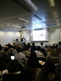
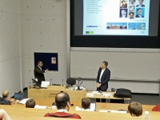

Invited talks
From Rashed Karim Wiki
Invited lectures
- Seeing is believing: Flat maps of the heart and other visualisation strategies invited lecture at the Visualisation and uncertainty in whole-heart modelling workshop, Zuse Institute Berlin, Germany
- Data Processing and Visualization for CMR Invited lecture at the Society of Cardiovascular Magnetic Resonance meeting (SCMR) 2015, INRIA, Sophia Antipolis, Nice, France.
  Imperial College 2015
Imperial College 2015
- LGE quantification and evaluation of its algorithms Invited lecture at the Hounsefield lecture parallel sessions, Imperial College London, London, UK
Organiser
- Left atrial wall quantification challenge at MICCAI 2016, Athens, Greece.
Recent conference orals
- An MR-compatible Robot Assisted Ablation Catheter with Steering based on Imaging, Tension and Contact-force oral at the MEIbioeng 2015, Leeds University, UK.
- Flattened maps of the left atrium to guide an MR-compatible robotic catheter talk at the British Machine Vision Association's one-day meeting Surgical Vision and Biophotonics, University College London (UCL), UK.
- Image-guidance of an MR-compatible catheter using combined 2D/3D models of the left atrium oral at Medical Engineering Centres Annual Meeting and Bioengineering14, Imperial College, London, UK
Local seminars
- Image segmentation tutorial talk at departmental seminar, King's College, London, UK
 Leeds University 2015
- Uncertainty workshop at St. Thomas' Hospital. KCL, London, UK.
Others
- Left atrial segmentation from 3D respiratory- and ECG-gated magnetic resonance angiography declined oral but poster at Functional Imaging and Modelling of the heart conference 2015, Technical University Eindhoven, The Netherlands.

{kind=link}
{kind=link}